Change the Height of the Building with "Floors"
Create the shape with "Floors" set to 5 and to 30, and compare the difference in height.


Follow the worked example · Change the Height of the Building with "Floors"
SmartTools Add-on Manual
Version 1.0.0 / November 19, 2026 / For Blender 5.1.2

Smart Geometry Suite is an add-on that collects generator tools for building shapes automatically. It can create terrain with mountains and valleys, points scattered over a surface, debris (rubble) such as stones and brick pieces, fragments split from a mesh, and vine-like curves. It also includes basic shapes (Box, Sphere, Cylinder, Wall, and more) that you create by dragging in the 3D Viewport, as in 3ds Max. You can resize these shapes later with the values of a modifier (a post-process that changes a shape). There are also features that build wall and slab meshes from Grease Pencil (hand-drawn lines). The buttons are in the "Smart Geometry" tab of the 3D Viewport Sidebar, divided into section headers by purpose.
Generate terrain, debris, fragments, and basic shapes with a button
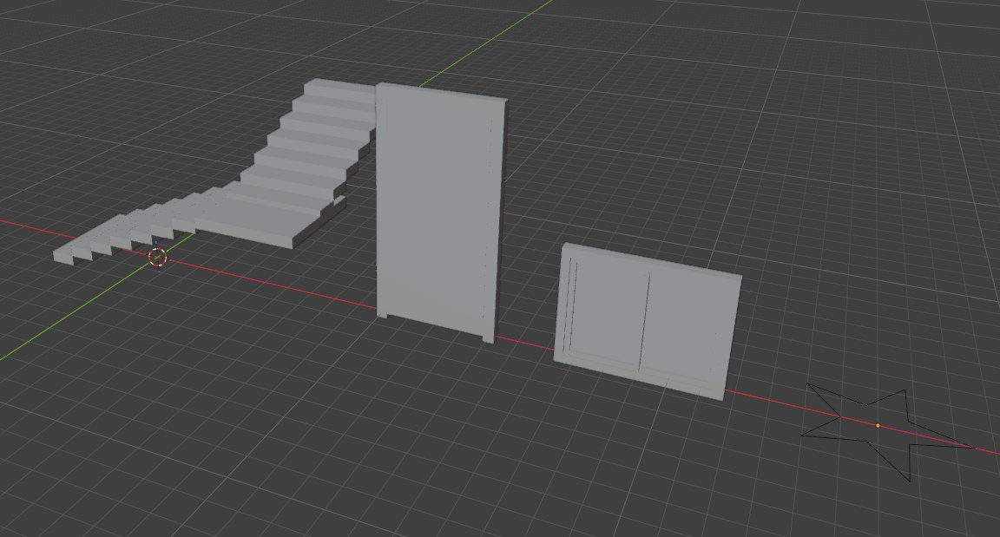
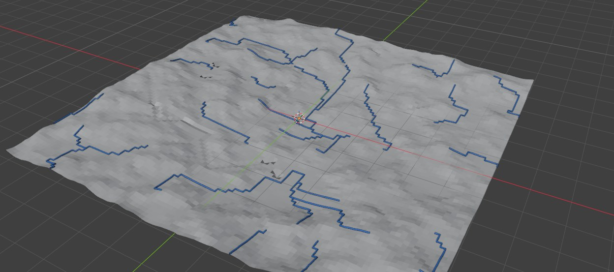
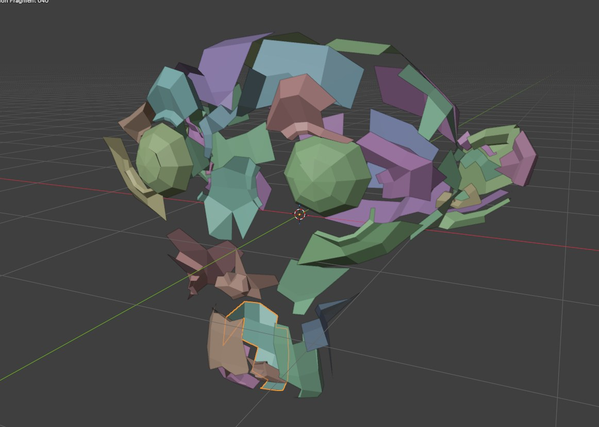
A shape generation tool that creates terrain, scatter points, debris, fragments, branching curves, and basic shapes you can edit with numbers later, all with a click of a button.
This is how the screen changes when you use this add-on. Chapter 5 walks through the exact steps in the "Example" boxes for each feature.
ExampleView Terrain Attributes in Color (Attribute Heatmap)(demonstrated on Created terrain)
"Create Attribute Heatmap" turns the size of a mesh attribute's values (density here) into colors and writes them to the mesh so you can check them in the 3D Viewport.
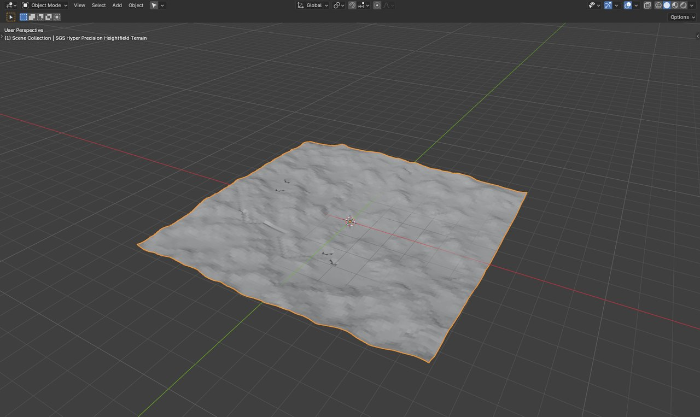

What to look for: The terrain, which was gray, is now colored from blue through yellow to red according to the density values. Here, the colors show that the density is high in the center and lower toward the outside.
How to install the add-ons, how to change the interface language, and how the N panel and the "?" help buttons work in every add-on are covered in the "SmartTools Overall Specification". Please read chapters 2 to 5 there first.
| ZIP to install | Smart_Geometry_Suite_1.0.0.zip |
|---|---|
| Name shown in Blender | Smart Geometry |
| Supported Blender | 5.1.2 |
It is in the "Smart Geometry" tab of the Sidebar (N panel) in the 3D Viewport. The same panel also appears in the Sidebar of other editors, such as the Image Editor and the Node Editor. Which editors show it follows the settings in Smart Tools Manager. There are also entry points in the 3D Viewport "Add" menu and in the "Modifiers" tab of the Properties Editor.
| Editors | 3D Viewport, Image Editor (UV Editor), Node Editor, Video Sequencer, Movie Clip Editor, Dope Sheet, Graph Editor, NLA Editor, Text Editor, File Browser, Spreadsheet, Properties |
|---|---|
| Tab | Smart Geometry |
| Mode | Object Mode |

In Object Mode, press N over the 3D Viewport and select Smart Geometry. Expand Terrain / Environment Generators to start a terrain.
The full panel shows Terrain / Environment Generators as the second heading.
Create the terrain in Object Mode and keep it selected for scattering. Display the proxies if the points are hard to see. They mark where the grass or rocks could go.
Look across the terrain at an angle and check that the points sit on its surface.
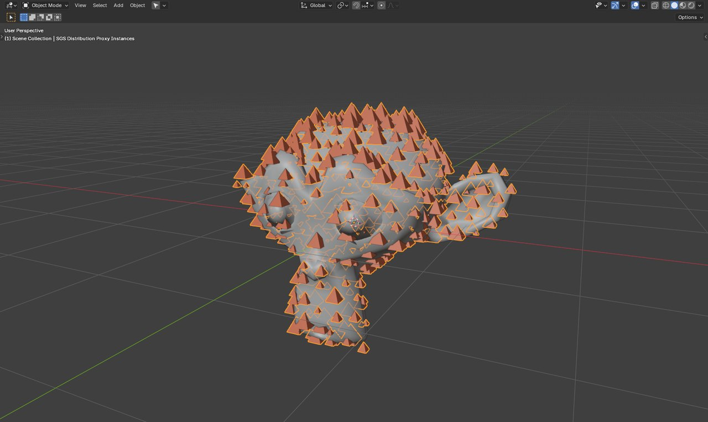
This chapter explains, step by step, how to use the features introduced in Highlights at the top, using numbered figures.The numbers in a figure match the numbered list below it. Click a figure to enlarge it. Each individual setting is described under its own heading in Chapter 5.
As in 3ds Max, you create shapes such as Boxes, Spheres, Cylinders, and Walls by dragging in the 3D Viewport. Afterward, you can change the length and number of divisions of the created shape in the "Modifiers" tab of the Properties Editor. Without recreating it, just change the values and update, and the shape changes. You can still edit it after saving and reopening. The menu even includes stairs, doors, windows, and line shapes such as stars.
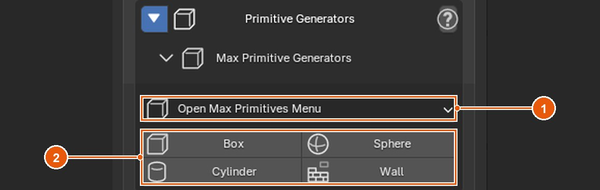
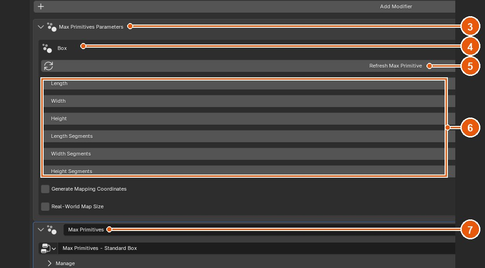

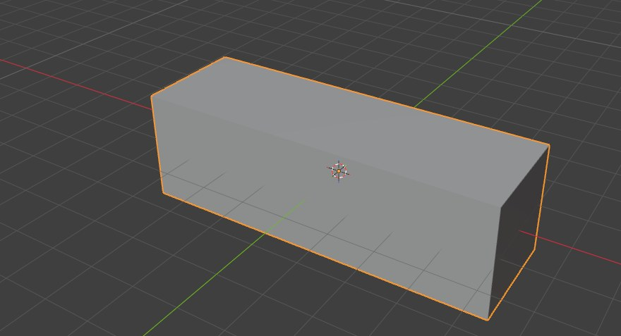
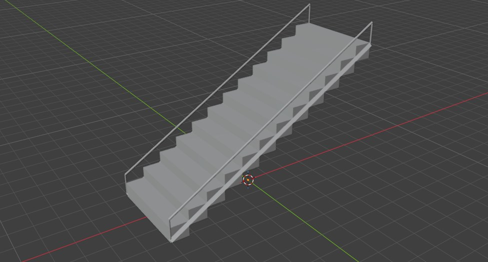
Settings in detail: 5-8. Primitive Generators, 5-11. "Max Primitives Parameters" (Properties Editor), 5-12. Entry Points in the "Add" Menu
Set the values and click "Create Precision Terrain" to create a terrain mesh with eroded-looking relief, with attributes such as height, slope, and water flow written to it. Then click "Create Drainage Flow Network" to get branching lines (curves) running from high ground down to the valleys, which you can use as a rough draft for rivers and ditches.
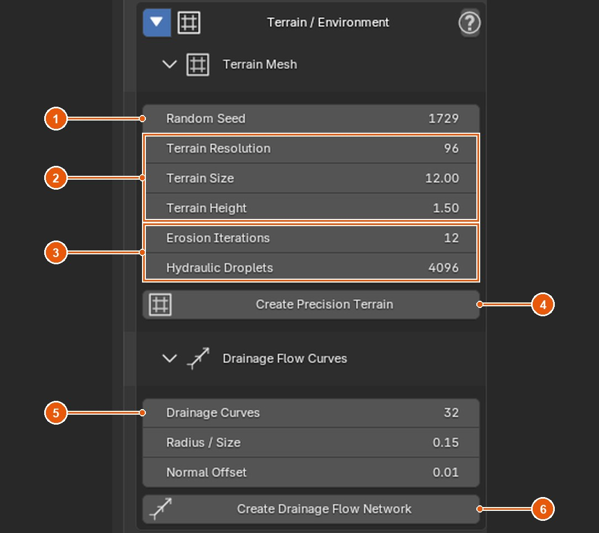
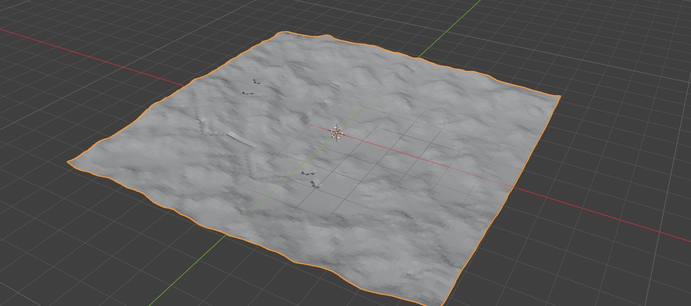
Settings in detail: 5-3. Terrain / Environment Generators, 5-9. Attribute / Visualization Generators
Create small props (debris) such as rubble, gravel, river stones, crystals, fallen leaves, and logs just by choosing a kind (module) and clicking "Generate". When you choose a module, only the settings that suit that kind appear. "Mesh Fragment Generator" creates fragments split from the faces of the selected mesh and lines them up, moving them outward little by little.
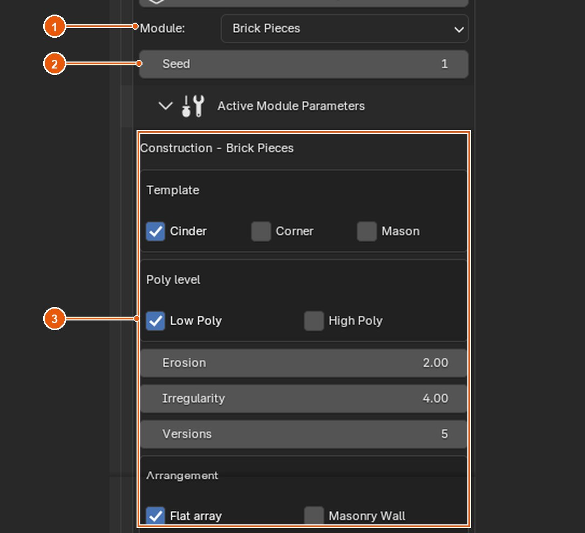
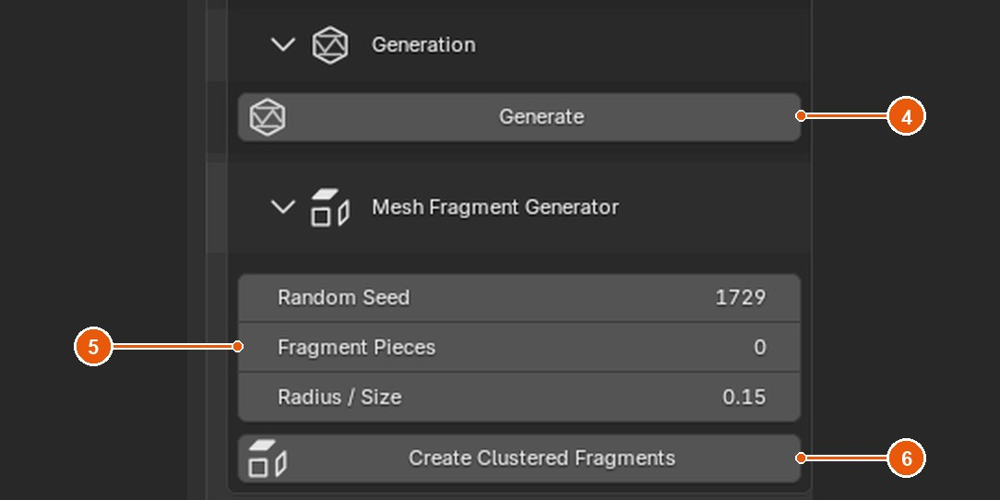

Settings in detail: 5-7. Debris / Fragment Generators, 5-12. Entry Points in the "Add" Menu
Each heading is explained in order from the top of the panel. Click the "?" to the right of a heading to show the same explanation in Blender. The blue "Example" boxes show real operations on simple models such as Suzanne, with the 3D Viewport before and after.
The panel has 9 section headers stacked vertically. All are closed at first. Open only the sections you want to use. Inside a section, there are further small collapsible subpanels (rows with a triangle).
LocationFrom the very top of the Sidebar "Smart Geometry" tab
| Item | What it does |
|---|---|
| Section header triangle and section header text | Click to open or close the contents of that section. |
| "?" | It is at the right end of a section header. Click it to open an explanation of that section in a small window. If the explanation is long, use the "Page" numbers at the top of the window to move to the next page. |
| Mode notice | When you are in a mode other than Object Mode, such as Edit Mode, one line appears at the top of the panel saying that buttons for Object Mode only are disabled. You can still see the contents of the panel, but buttons that need Object Mode cannot be clicked until you return to Object Mode. |
A section header for turning helper functions on and off. "N-panel State Save" is "On" at first, and all the others are "Off" at first. Set only the ones you need to "On". Even when enabled, they do not keep watching in the background. They run only at set times, such as when a setting changes or when you save or load a file.
LocationThe 1st section header of the panel
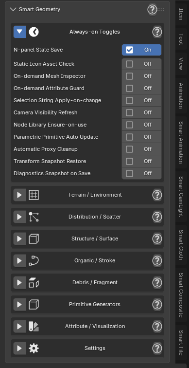
| Item | What it does |
|---|---|
| "N-panel State Save" | Decides when the panel settings are written to a file in the Blender configuration folder. When enabled, they are saved immediately after every change. When disabled, saving waits until a time such as switching scenes, saving or loading a file, or quitting Blender. |
| "Static Icon Asset Check" | Only checks whether the bundled icon images are all present. The icons on screen do not change. |
| "On-demand Mesh Inspector" | Updates the name, vertex count, face count, attribute count, and modifier count of the selected mesh when you open the diagnostics display or toggle this item. |
| "On-demand Attribute Guard" | Creates any missing basic attributes when you apply a feature or run a generate button. |
| "Selection String Apply-on-change" | When you edit the "Selection String", applies that expression again to the active mesh. |
| "Camera Visibility Refresh" | Updates the attribute for whether something is visible from the camera, only during related operations and when saving or loading. |
| "Node Library Ensure-on-use" | When this add-on's node groups are missing, recreates them when they are needed. |
| "Parametric Primitive Auto Update" | Automatically rebuilds the basic shapes created by dragging (Max Primitives) when you change a value or the frame changes. |
| "Automatic Proxy Cleanup" | Cleans up temporary helper shapes when loading and saving. |
| "Transform Snapshot Restore" | Records the position, rotation, and scale of generated objects when you save, and restores them after the file is loaded. |
| "Diagnostics Snapshot on Save" | Writes out a diagnostics JSON file when saving, loading, and similar times. |
Creates a terrain mesh and lines that show the paths water takes. It contains 2 subpanels, "Terrain Mesh" and "Drainage Flow Curves".
LocationThe 2nd section header of the panel
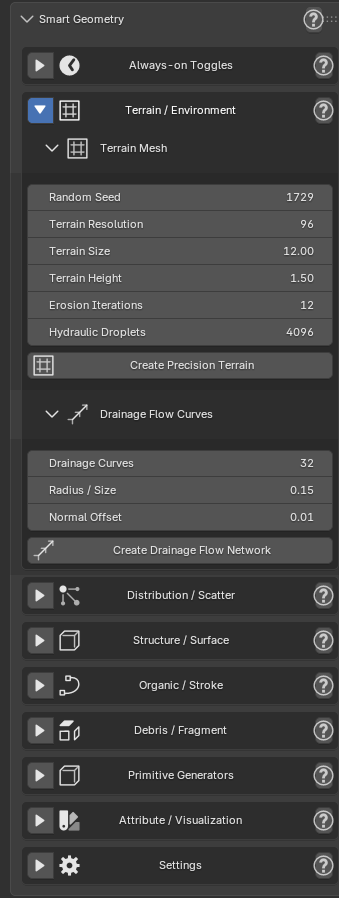
| Item | What it does |
|---|---|
| "Terrain Mesh" | The subpanel for creating terrain. Set the values below, then click "Create Precision Terrain". |
| "Random Seed" | A number that decides how the bumps appear. The same number with the same settings gives the same shape. |
| "Terrain Resolution" | The number of points along one side of the terrain. Larger values give finer detail but take longer to calculate. |
| "Terrain Size" and "Terrain Height" | Values that adjust the width of the terrain and the height of its relief. The actual highest point changes with the terrain shape and generation settings. |
| "Erosion Iterations" and "Hydraulic Droplets" | The number of passes and the amount for the calculation that creates eroded shapes and traces of water flow. Larger values take longer. |
| "Create Precision Terrain" | Creates a new terrain mesh. Attributes such as height, slope, and water flow are written at the same time. |
| "Drainage Flow Curves" | A subpanel that creates lines (curves) running from the high parts of the selected terrain to the low parts. |
| "Drainage Curve Count" | The maximum number of lines to create. |
| "Radius / Size" and "Normal Offset" | Values that also appear inside "Drainage Flow Curves". They are a guide for line thickness and the amount the lines are lifted slightly off the ground. The thickness never gets thinner than the amount based on the terrain size. |
| "Create Drainage Flow Network" | Creates branching lines from the high parts of the selected mesh to the low parts. Use it after you create terrain with "Create Precision Terrain". The slope is read with the object in its placed state. For a flat mesh with no height difference, no lines are created and an error appears. |
ExampleCreate Terrain with Relief Using a Single Button(demonstrated on Empty scene)
"Create Precision Terrain" creates a single mesh of bumpy terrain. Attributes such as height and slope are also written into it at the same time.
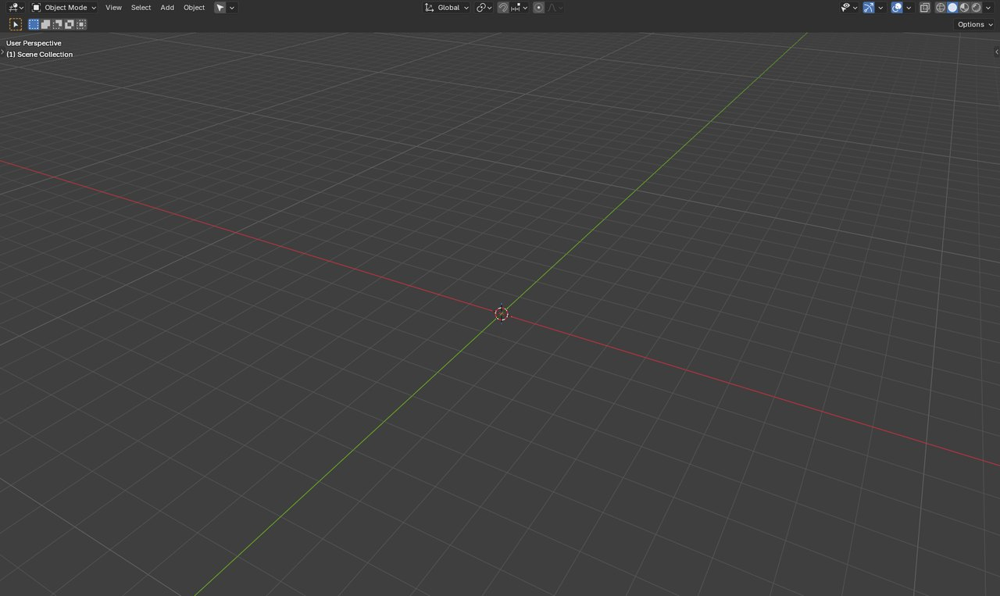
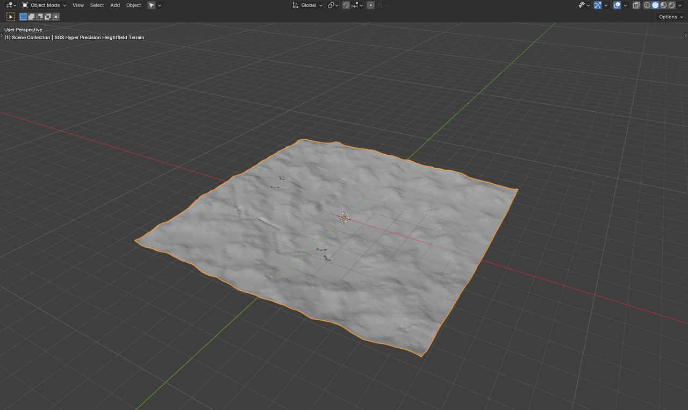
What to look for: Square terrain with relief is created as a single mesh in empty space. With the same "Random Seed" and the same settings, you get the same shape no matter how many times you create it.
ExampleDraw Water Flow Lines on the Terrain(demonstrated on Created terrain)
"Create Drainage Flow Network" creates branching lines that run from the high parts of the terrain to the low parts.
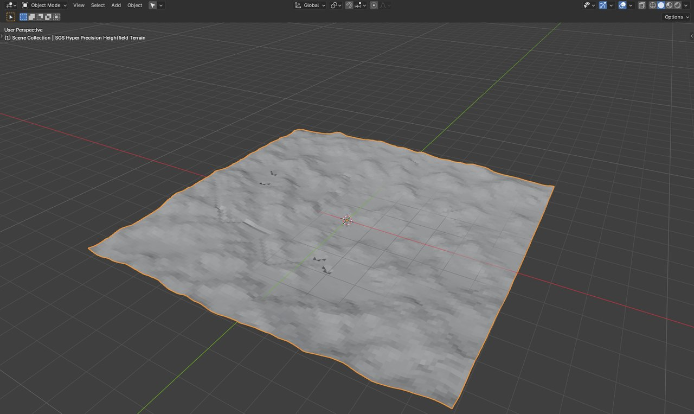
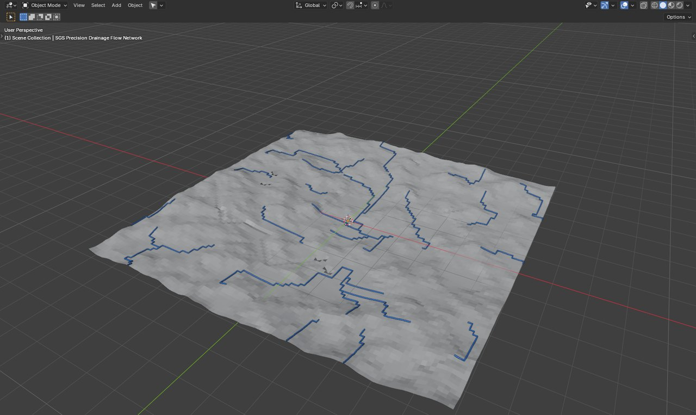
What to look for: Branching lines appear that follow the relief, running down from the mountaintops into the valleys. The lines are curve objects, so you can use them as rough drafts for rivers and ditches.
Scatters points over a mesh surface. The points can be used as a guide for where to place grass and stones. It contains 3 subpanels.
LocationThe 3rd section header of the panel
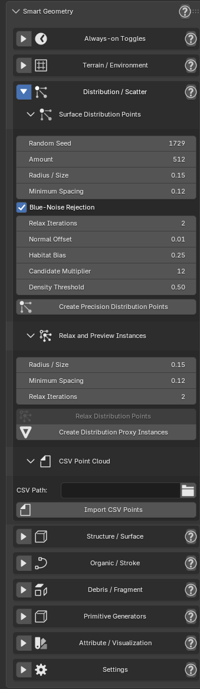
| Item | What it does |
|---|---|
| "Surface Distribution Points" | The subpanel for scattering points. When no mesh is selected, points are created on a flat grid instead. |
| "Random Seed" and "Radius / Size" | A number that decides how the points appear, and a guide for point size. The same number with the same settings gives the same arrangement. |
| "Amount" | The target number of points to create. Points that are too close are discarded, so the result may be fewer than this. |
| "Minimum Spacing" and "Blue-Noise Rejection" | When "Blue-Noise Rejection" is on, points that are too close are discarded to reduce clumping. The minimum distance between points at that time is "Minimum Spacing". |
| "Normal Offset" | Lifts the points slightly in the direction of the face (normal). |
| "Relax Iterations", "Habitat Bias", "Candidate Multiplier", and "Density Threshold" | In order: the number of passes that even out the spacing after points are placed, how heavily the ground-type attribute is weighted, how many candidates are tried to place one point, and the density cutoff that makes placement harder. |
| "Create Precision Distribution Points" | Creates a mesh of points only, with no faces (a point cloud). |
| "Relax and Preview Instances" | A subpanel for refining the points you created. |
| "Relax Distribution Points" | Evens out the spacing of the selected set of points. It uses the "Radius / Size", "Minimum Spacing", and "Relax Iterations" values above. It can be clicked when you have selected a mesh of points only (0 faces). |
| "Create Distribution Proxy Instances" | Places small pyramid shapes at the point positions so you can check the arrangement visually. |
| "CSV Point Cloud" | A subpanel for importing points from a CSV file (closed at first). |
| "CSV Path" and "Import CSV Points" | Specify a CSV file that has x, y, and z columns to create a mesh of a set of points. |
ExampleScatter Points on Suzanne's Surface and Place Marker Shapes(demonstrated on Suzanne)
"Create Precision Distribution Points" scatters points over the surface, and "Create Distribution Proxy Instances" places small pyramids at the point positions so you can check the arrangement.
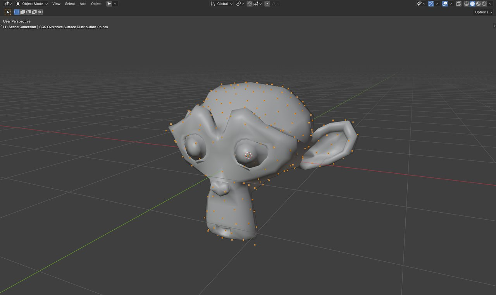
What to look for: Many points are scattered over Suzanne's surface. Points alone are hard to see, so placing pyramids shows clearly where the points are and how densely they are arranged (all the pyramids are placed pointing upward).
Creates small blocks to place on a surface and building-like stepped shapes. It contains 2 subpanels.
LocationThe 4th section header of the panel
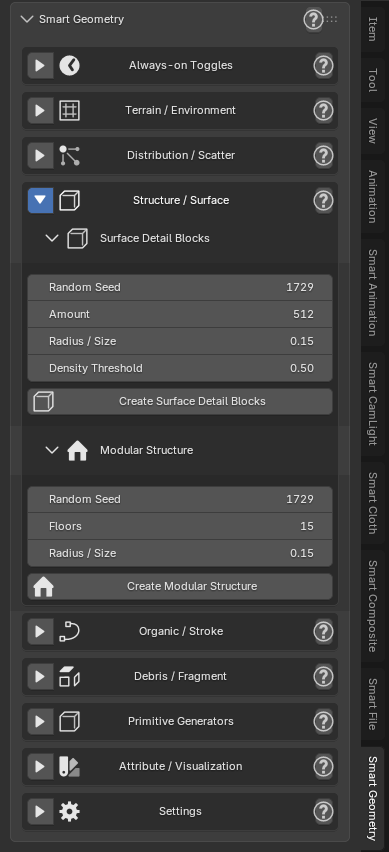
| Item | What it does |
|---|---|
| "Random Seed" | It appears in both subpanels. A number that decides how the boxes and bumps are arranged. The same number with the same settings gives the same shape. |
| "Surface Detail Blocks" | A subpanel that creates small blocks in bulk on the faces of the selected mesh, aligned to the face direction. When no mesh is selected, they are created on a flat grid instead. |
| "Amount" (Surface Detail Blocks) | A guide for the number of boxes to create. The more you add, the more densely small boxes cover the faces. |
| "Radius / Size" (Surface Detail Blocks) | A guide for the size and height of the boxes. |
| "Density Threshold" (Surface Detail Blocks) | The lower the face density attribute is below this value, the harder it is to place boxes. The higher you set it, the fewer boxes appear. For a cube, raising it to 0.95 gives about half as many as at 0.5. |
| "Create Surface Detail Blocks" | Spreads a number of boxes close to "Amount" across all the faces and creates a helper mesh combined into one. It works the same for a cube with few faces or terrain with many faces. Use it to preview machine parts or wall surface bumps. If you raise "Amount" into the thousands, it can take tens of seconds. |
| "Modular Structure" | A subpanel that creates building-like shapes made of stacked floor parts, wall protrusions, and roof parts. |
| "Floors" | Sets the number of floors. It starts at 15 and can be set from 1 to 160. The more floors, the taller it gets. The height of a floor is set by "Radius / Size". |
| "Radius / Size" (Modular Structure) | Sets the size of the whole building. Doubling it doubles the width, depth, and height. |
| "Create Modular Structure" | Creates a stepped structure mesh from the values above. |
ExampleCover the Faces of a Cube with Boxes(demonstrated on Cube)
"Create Surface Detail Blocks" creates many boxes at once on the faces of the selected mesh, aligned to the direction of each face.
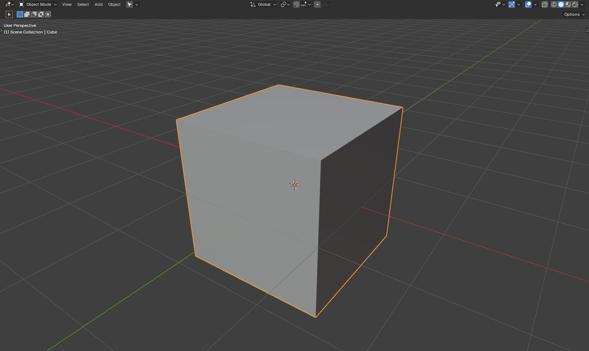
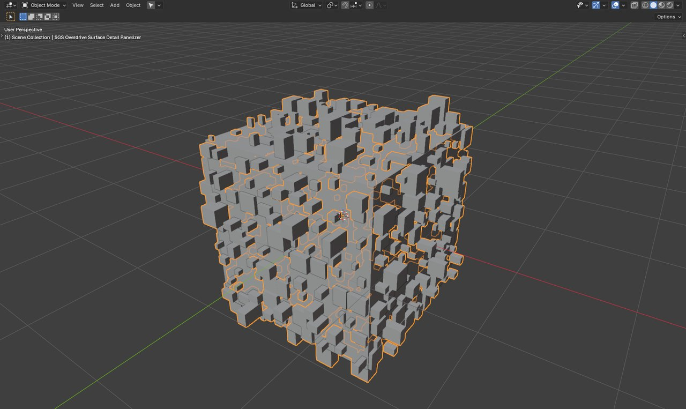
What to look for: A number of boxes close to "Amount" (default 512) are spread across all the faces. This works the same way on a cube with few faces and on terrain with many faces. The boxes are created as a single mesh, separate from the original cube.
ExampleChange the Number of Boxes with "Amount"(demonstrated on Cube)
Change "Amount" in "Surface Detail Blocks" and compare the density of the boxes.
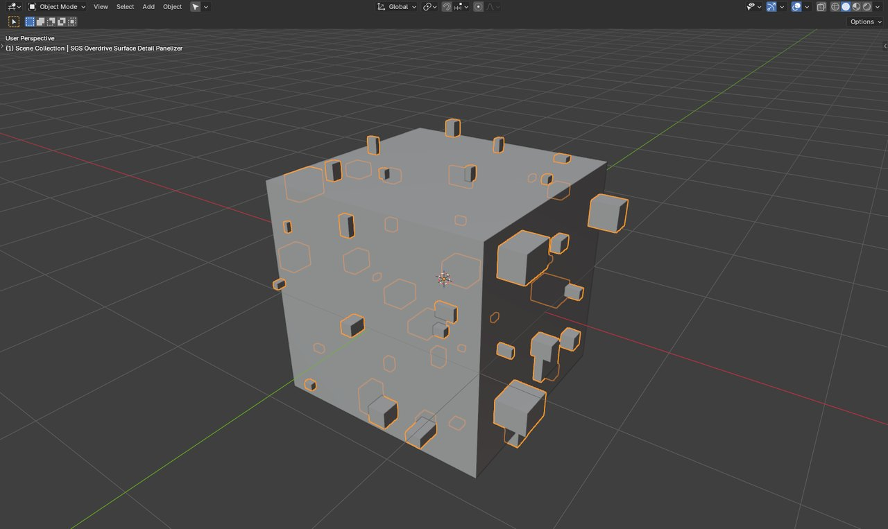
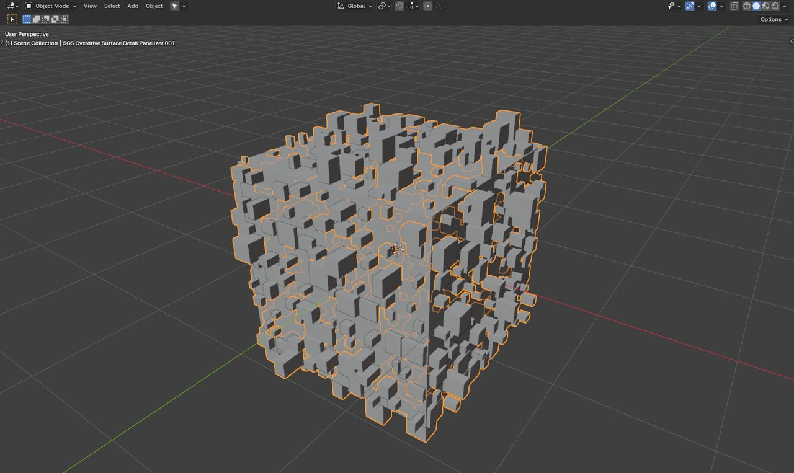
What to look for: With "Amount" at 64, the boxes are sparse; at 512, all the faces are covered with fine boxes. The higher the number, the denser the boxes. For easier comparison, the boxes created earlier are hidden.
ExampleCreate a Tiered, Building-Like Shape(demonstrated on Empty scene)
"Create Modular Structure" creates a shape made of stacked floor parts, wall protrusions, and roof parts.
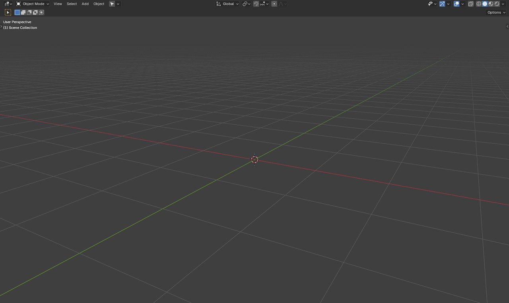
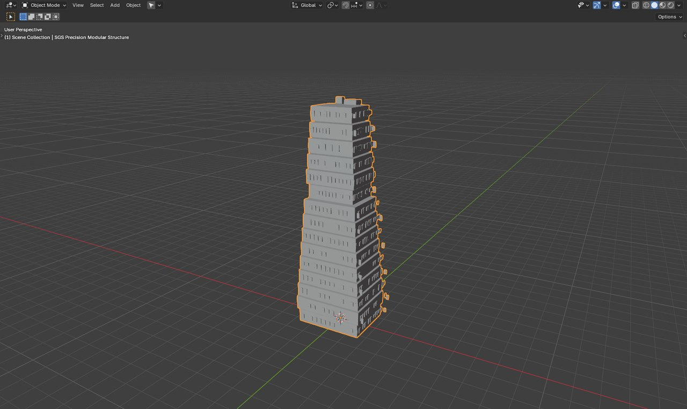
What to look for: A 15-floor, tower-like shape that tapers toward the top is created as a single mesh. Small protrusions line the walls, and you can use it as a rough draft for background buildings.
ExampleChange the Height of the Building with "Floors"(demonstrated on Empty scene)
Create the shape with "Floors" set to 5 and to 30, and compare the difference in height.
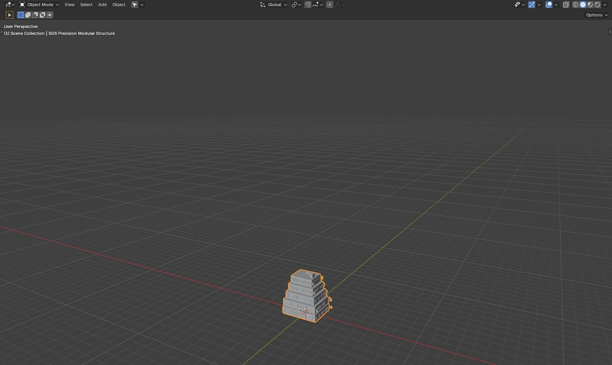
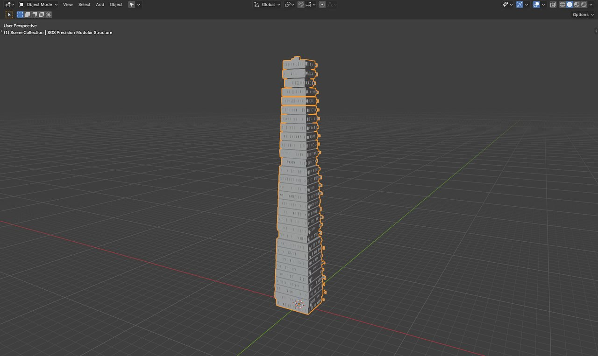
What to look for: The more you increase "Floors", the taller the shape grows. The width and depth stay almost the same. For easier comparison, the 2 figures were taken with the same camera.
Tools that create branching curves and meshes from Grease Pencil lines. It contains 2 subpanels.
LocationThe 5th section header of the panel
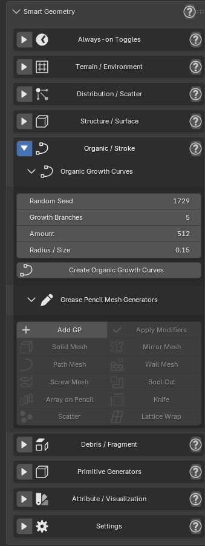
| Item | What it does |
|---|---|
| "Organic Growth Curve" | A subpanel for creating curves such as vines, roots, and cables. |
| "Random Seed" | A number that decides how the lines bend and which way they grow. The same number with the same settings gives the same lines. |
| "Growth Branches" | Sets the number of branches. To increase the number of lines, raise this value. Short branches are added here and there, so the number of lines is slightly higher (7 lines at 5). |
| "Amount" | Sets the fineness of the lines, not the number of lines. The number of points on one branch is "Amount" divided by "Growth Branches". A low value gives a rough polyline, and a high value gives a finely curving line. |
| "Radius / Size" | Sets the thickness of the lines and the width of their fine bends. Larger values give thicker lines with bigger waves. |
| "Create Organic Growth Curves" | Creates branching curves that fit the position and size of the selected mesh. When no mesh is selected, they are created around the origin. |
| "Grease Pencil Mesh Generators" | A subpanel with two columns of buttons that create shapes from Grease Pencil lines. |
| "Add GP" | Adds a new Grease Pencil and switches to the mode for drawing lines. It can be clicked in Object Mode. |
| "Solid Mesh", "Mirror Mesh", "Path Mesh", and "Wall Mesh" | Adds a Geometry Nodes modifier that turns the line into a thick shape, a mirrored shape, a shape that follows a line, or a wall shape. "Wall Mesh" connects the start and end of the line to make a closed wall. |
| "Screw Mesh" | Rotates the line as a cross-section to create a shape like one made on a potter's wheel. |
| "Bool Cut" and "Knife" | Cuts the other meshes selected with it, using the shape of the line. A small window of settings appears when you click. |
| "Array on Pencil" | Select a mesh, then select the Grease Pencil last (make it active) and click to line up the mesh along the line. |
| "Scatter" | At the positions of marks like × drawn with Grease Pencil, creates scatter objects for each layer. |
| "Lattice Wrap" | Select 2 meshes and click. It creates a flat lattice (a box that wraps a shape and bends it) sized to the mesh that is not active (not the last one selected), and fits it to the surface of the active mesh. |
| "Apply Modifiers" | Applies all modifiers on the active object and turns it into an editable mesh. Besides the result of "Screw Mesh", a Grease Pencil with "Wall Mesh" or similar also turns into a mesh as it is. For the result of "Array on Pencil", the curve and Grease Pencil used as the source of the arrangement are also deleted. |
ExampleCreate Vine-Like Lines Growing Upward from Suzanne(demonstrated on Suzanne)
"Create Organic Growth Curves" creates curves that grow while winding like vines or roots, matched to the position and size of the selected mesh. Rather than following the surface, they grow upward from the center of the object.
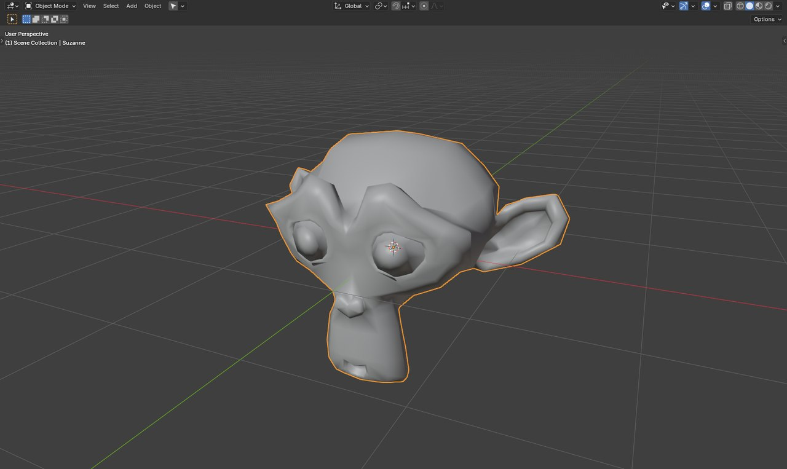
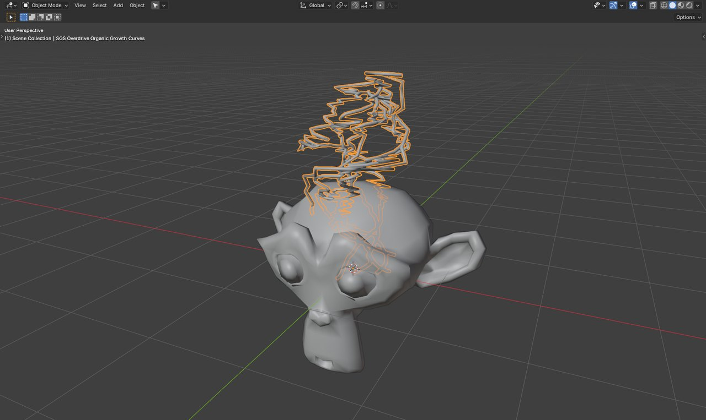
What to look for: Many lines are created that grow upward from the center of Suzanne, bending in small zigzags and winding as they go. The lines are given a small thickness from the start. The curves are curve objects, so you can later change their thickness or add leaves with Geometry Nodes.
ExampleRaise Walls from Hand-Drawn Lines(demonstrated on Grease Pencil lines)
"Wall Mesh" raises walls with thickness and height along lines seen from above.
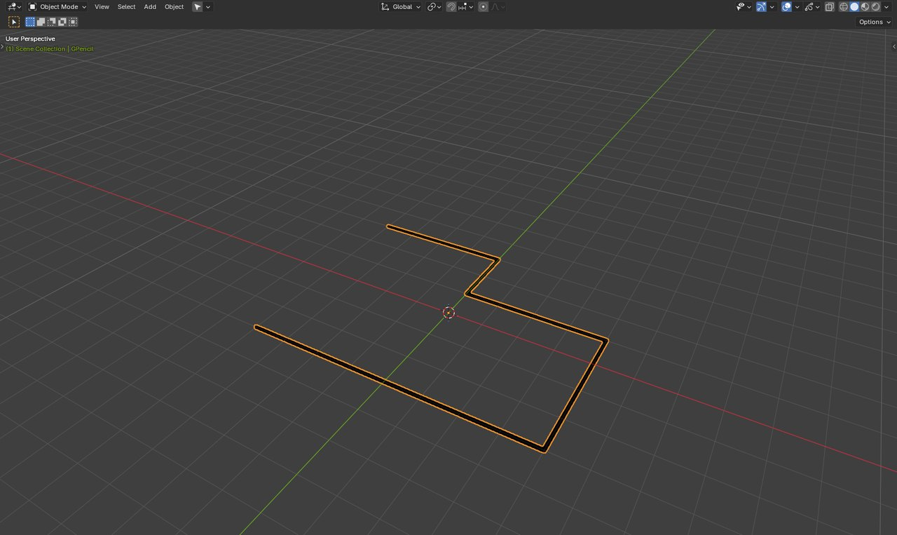
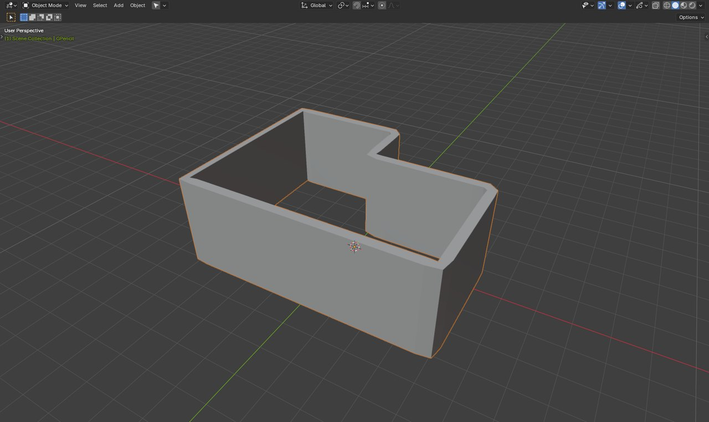
What to look for: The floor plan, which was just thin lines, turns into thick walls. The start and end of the line are connected, making a closed wall. The wall shape is generated by a modifier, so if you draw more lines, the walls change too.
Creates small props such as rubble and pebbles (debris), and fragments split from a mesh. It contains 2 subpanels, "Debris Module Generator" and "Mesh Fragment Generator".
LocationThe 6th section header of the panel

| Item | What it does |
|---|---|
| "Debris Module Generator" | The subpanel for creating debris. When you select one module (the kind of thing to create), only the settings needed for that kind appear. It contains the subpanels "Module Selection", "Active Module Parameters", and "Generate". |
| "Smart Geometry Debris" | It is inside "Module Selection". It opens the same settings in a separate small window. |
| "Module" | Choose what to create. There are 19 kinds, including brick pieces, gravel, river stones, crystals, fallen leaves, and logs. |
| "Seed" | A number that decides how the shape appears. The same number with the same settings gives the same result. |
| "Active Module Parameters" | The values of the selected module are listed here. At the very top, the name of the module appears (for brick pieces, "Construction - Brick Pieces"). The contents change with each module. |
| Example of Brick Pieces settings | When you select brick pieces, these appear: "Template" (choose the kind to create from "Cinder", "Corner", and "Mason"), "Poly level" ("Low Poly" and "High Poly"), "Erosion" (the amount of chipping and crumbling), "Irregularity" (the variation in size and shape), "Versions", and "Arrangement". If you turn on "Flat array" in "Arrangement", the bricks are laid out flat. If you turn on "Masonry Wall", a wall is built with the bond pattern ("Running", "Brick English Bond", or "Flemish") and "Wall Width", "Wall Height", "Mortar Gap", and "Special Rate". While "Masonry Wall" is off, the bond pattern and wall values are grayed out and cannot be clicked. |
| "Generate" | Creates the selected debris in the scene. It can be clicked in Object Mode. |
| "Mesh Fragment Generator" | A subpanel that splits the faces of the selected mesh into fragments, group by group. |
| "Random Seed" | A number that decides which faces become the same fragment. Changing the number changes how it breaks. |
| "Fragment Pieces" | The target number of fragments to create. At 0, it is decided automatically from the mesh's face count (about 12 faces per piece, within a range of 3 to 64 pieces). |
| "Radius / Size" | A guide for how far the fragments are moved outward. |
| "Create Clustered Fragments" | For each group of faces, creates a hollow shell fragment and lines the fragments up, moving them outward little by little. Each fragment gets a number attribute. For a mesh made by joining separate parts, the parts are not split; each whole part goes into one of the fragments. The original mesh remains. |
ExampleCreate Crystals (Debris Module)(demonstrated on Empty scene)
In "Debris Module Generator", choose what to create (a module) and click "Generate" to create small props such as rubble and minerals in the scene.
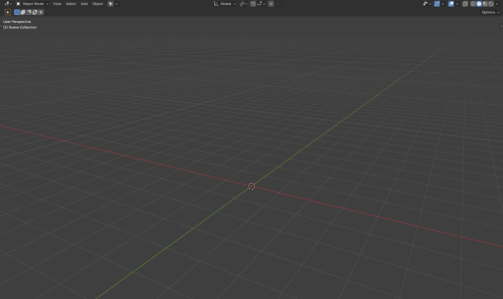
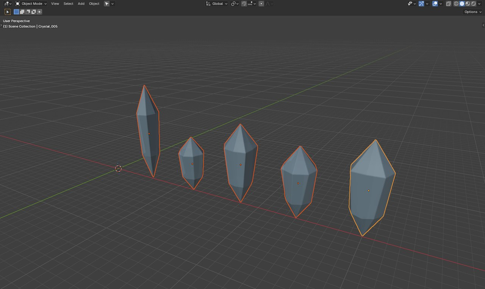
What to look for: In empty space, 5 pointed crystals are created in a row. If you change the "Seed" number and click again, you get different shapes.
ExampleBreak Suzanne into Fragments (Clustered Fragments)(demonstrated on Suzanne)
"Create Clustered Fragments" creates fragments by dividing the faces of the selected mesh, and arranges them slightly apart, moved outward.
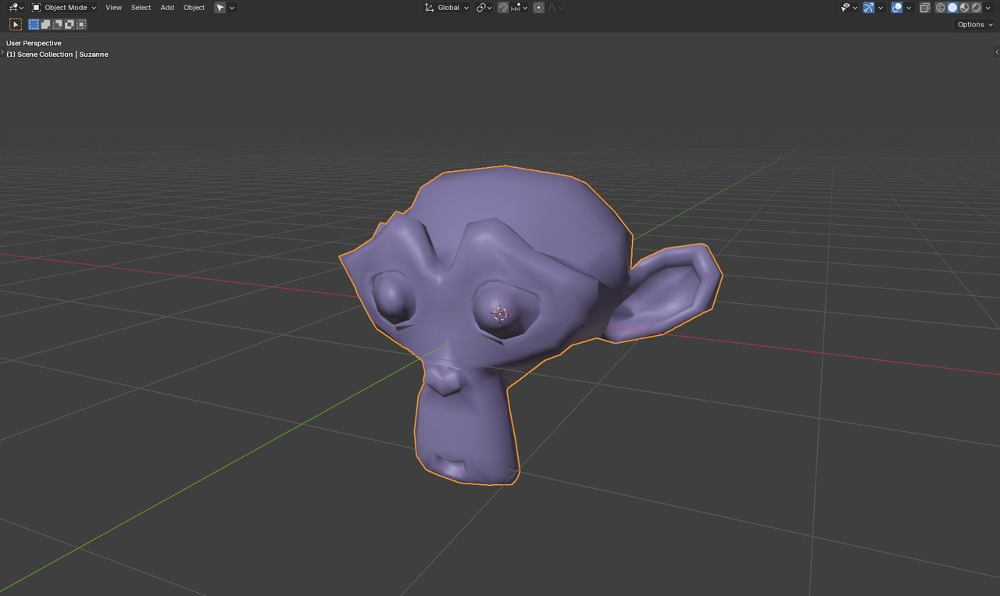
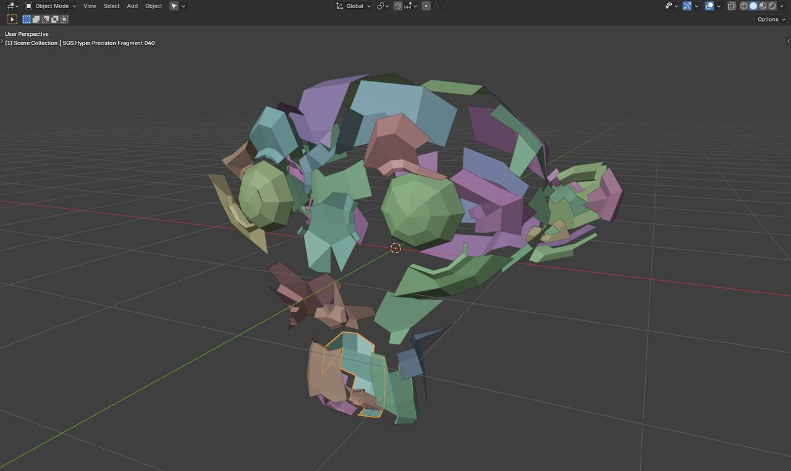
What to look for: The single Suzanne splits into fragments, one for each group of faces (about 40 for Suzanne; they are hollow shells), which scatter outward. You can change the number of fragments with "Fragment Piece Count". In a mesh made by joining separate parts, the parts are not split; each part goes whole into one of the fragments. Displaying each fragment in a different color (shading Color set to "Random") makes it easy to see how the mesh was split. The original Suzanne remains, so it is hidden for visibility.
ExampleChange How It Breaks with "Fragment Piece Count"(demonstrated on Suzanne)
Compare "Fragment Piece Count" set to 8 and to 0 (Auto).
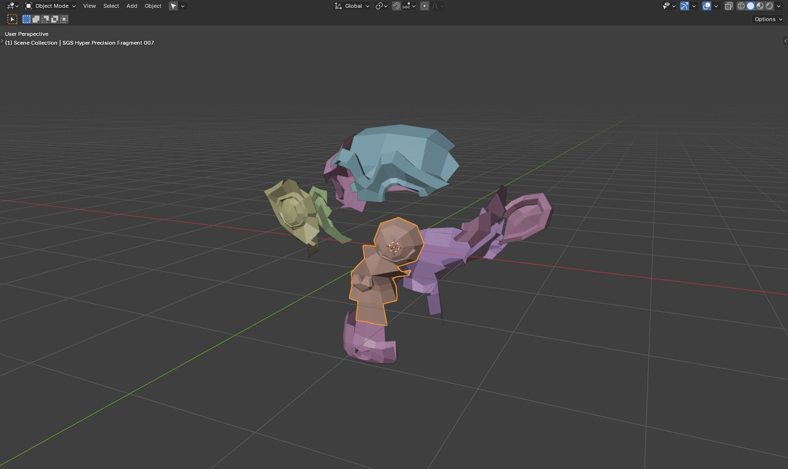
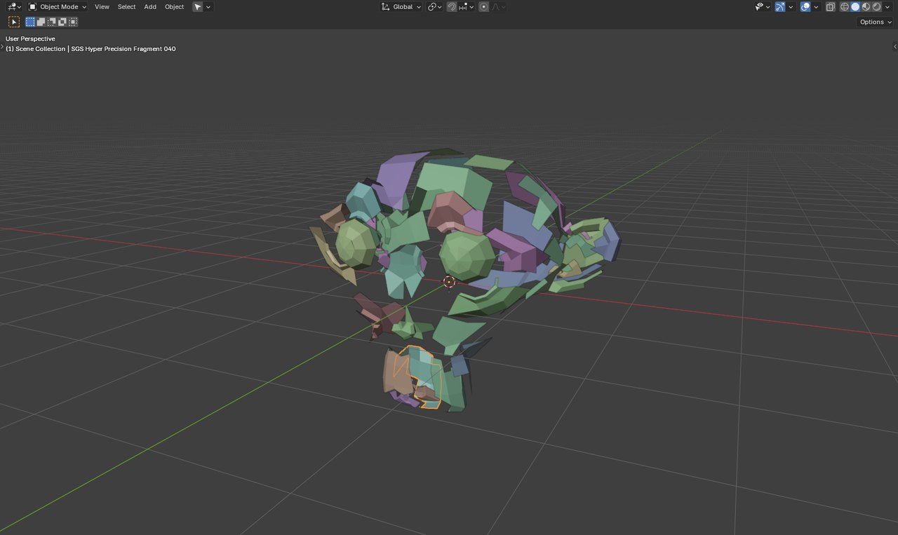
What to look for: With "Fragment Piece Count" at 8, the mesh splits into large chunks; at 0, it splits into small fragments whose number is determined automatically from the face count (about 40 for Suzanne). For easier comparison, the original Suzanne and the fragments created earlier are hidden.
Creates basic shapes such as Boxes and Walls by dragging in the 3D Viewport. You can edit the created shape later with modifier values.
Location"Max Primitive Generators" inside the 7th section header of the panel
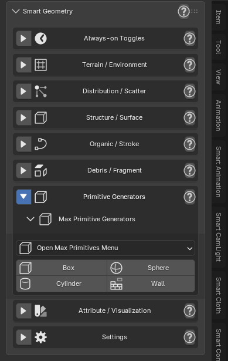
| Item | What it does |
|---|---|
| "Open Max Primitives Menu" | Opens the list of shapes you can create as a menu. Its contents are the same as "Max Primitives" in the "Add" menu, and choosing one starts creating it by dragging. |
| "Box", "Sphere", "Cylinder", and "Wall" | After you click, click and drag in the 3D Viewport to set the base size or radius. For a shape with height, move the mouse next to set the height, then click to confirm. |
ExampleCreate a Staircase, a Door, a Window, and a Star(demonstrated on Max Primitives shapes)
The menu that "Open Max Primitives Menu" opens includes not only boxes and spheres but also stairs, doors, windows, shapes (line shapes), and more.
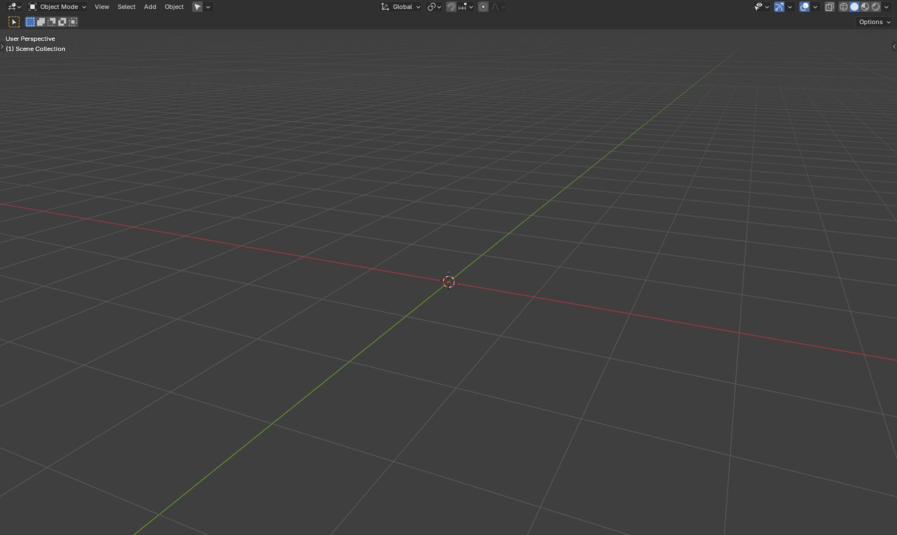
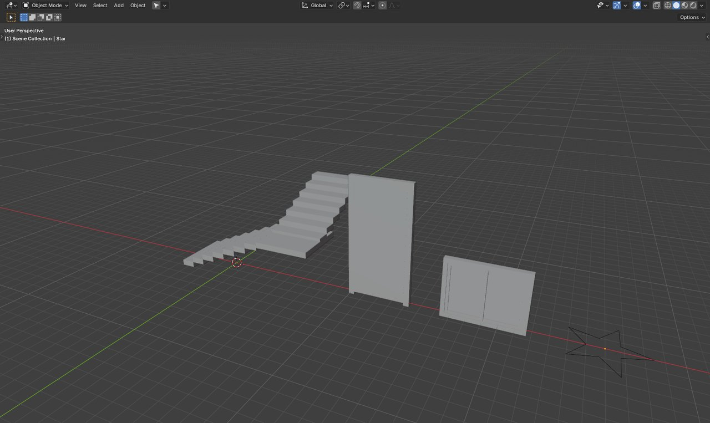
What to look for: Every shape is created with all its parts in place just by dragging, and you can adjust it later with the values in the "Modifiers" tab. The figure shows them created at their default sizes and lined up side by side.
ExampleAdd Handrails to a Straight Stair(demonstrated on Max Primitives shapes)
Create a "Straight Stair" from "Stairs", check the shape of the steps, and then add handrails.
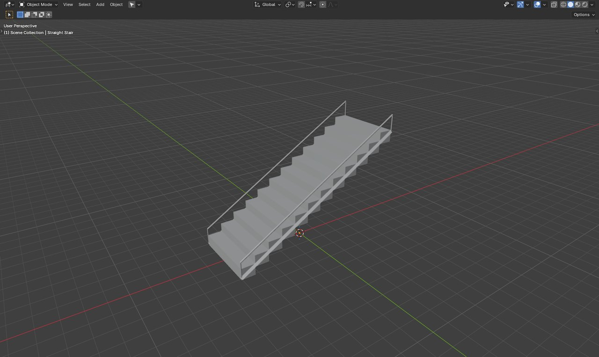
What to look for: Just by creating it, you can see each step individually. The thin bars on the sides are the "Stringers". Turning on "Railings" adds posts and handrails on both sides of the stairs. The figure shows stairs created at the default size.
Writes attributes (per-vertex data such as height, slope, and density) into a mesh and checks them with colors. It contains 3 subpanels.
LocationThe 8th section header of the panel
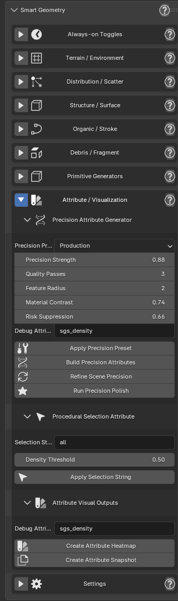
| Item | What it does |
|---|---|
| "Precision Attribute Generator" | The subpanel for creating attributes. It lists "Precision Preset", detailed values such as "Precision Strength", "Quality Passes", "Feature Radius", "Material Contrast", and "Risk Suppression", and "Debug Attribute". |
| "Precision Preset" and "Apply Precision Preset" | Choose from "Preview" (fast), "Production" (standard), and "Extreme" (most thorough) to replace the panel values all at once. It does not change anything in the scene. |
| "Build Precision Attributes" | Creates attributes such as height, slope, and density on the selected mesh. Use it before scattering and similar steps. |
| "Refine Scene Precision" | After editing a mesh, recreates the attributes of the selected mesh. |
| "Run Precision Polish" | Recreates the attributes of the selected mesh and also adds attributes that evaluate quality. |
| "Procedural Selection Attributes" and "Selection String" | A subpanel that selects vertices with a text expression. For example, write all (everything), 2-15 (a range of indices), or density>0.5 (where density is greater than 0.5). "Density Threshold" is also listed below. |
| "Apply Selection String" | Writes the result selected by the expression to the attribute and the "SGS Selection" vertex group. |
| "Attribute Visualization Output" and "Debug Attribute" | Enter the name of the attribute you want to see in color (sgs_density at first). |
| "Create Attribute Heatmap" | Writes a color attribute (sgs_debug_heatmap) to the selected mesh, with the size of the chosen attribute's values turned into colors. In Solid shading in the 3D Viewport, set the shading Color to "Attribute" to see the colors on the mesh. |
| "Create Attribute Snapshot" | Copies the shape of the selected mesh to a separate object for checking, and writes and keeps the colors of the chosen attribute (a heatmap) on it. |
ExampleView Terrain Attributes in Color (Attribute Heatmap)(demonstrated on Created terrain)
"Create Attribute Heatmap" turns the size of a mesh attribute's values (density here) into colors and writes them to the mesh so you can check them in the 3D Viewport.
What to look for: The terrain, which was gray, is now colored from blue through yellow to red according to the density values. Here, the colors show that the density is high in the center and lower toward the outside.
A section header that collects settings and operations other than generation. It has display settings, the node library, feature application, diagnostics, and export.
LocationThe 9th (bottom) section header of the panel
| Item | What it does |
|---|---|
| "Interface" | It has "UI Density", "Icon Scale", and "Show Advanced". If you turn on "Show Advanced", detailed items are added, such as filtering the feature list, "Coverage Summary", and "Storage". |
| "Node Library and Assets" | Creates this add-on's Geometry Nodes node groups with "Create Node Group Library" and recreates them with "Rebuild Node Group Library". "Capsule Prefix" is the text added to the start of the names of what is created. If you turn on "Mark Node Groups as Assets", the created node groups are registered as assets. |
| "Feature / Pack Apply" | Choose "Active Feature" or "Active Pack" (a bundle of features), then use "Apply Feature" or "Apply Pack" to attach it to the selected mesh as a Geometry Nodes modifier. |
| "Diagnostics and Cleanup" | "Refresh Diagnostics" shows the counts of names, vertices, edges, faces, attributes, and modifiers of the selected mesh. "Export Diagnostics JSON" and "Export Inventory JSON" write them to a file, and "Remove Generated Node Groups" deletes only the node groups this add-on created. |
| "Import / Export Manifests" | With "Export USD Sidecar Manifest" and similar, writes information about attributes and node groups to a JSON file for handing off to other tools. |
| "Debris Utility Settings" | It has "Embedded Module Availability" (shows whether the bundled debris modules are usable) and an "About" button. |
| "Visual Reference" | "Open Visual Reference" opens a list of figures, and "Export Icon Reference Sheet" writes out an image. |
When you select a basic shape created by dragging, this panel appears in the "Modifiers" tab of the Properties Editor. You can edit the shape's values here. You can still edit them after saving and reopening.
LocationProperties Editor > "Modifiers" tab
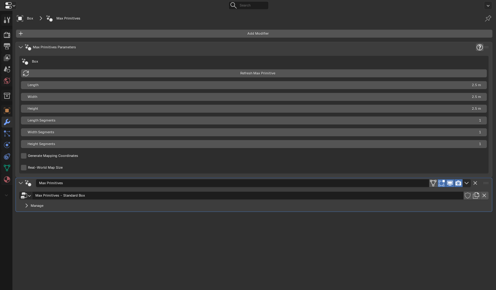
| Item | What it does |
|---|---|
| Shape name | The first row of the panel shows the name of the selected shape. |
| "Refresh Max Primitive" | It is right below the shape name. Click it to apply the current values to the shape immediately. |
| Per-shape values | Values that suit the kind of shape are listed, such as width, height, and number of divisions. For compound objects such as Boolean, specifying an operand (the other object) attaches a modifier that cuts or adds with that shape. |
| "Handrail", "Stringer", and "Nosing" (Stairs) | For Straight stairs, "Railings" adds posts and handrails on both sides of the stairs. "Stringers" is the number of bars running along the sides of the stairs, and it starts at 2. "Nosing" is the length by which each tread projects out in front of its step. Spiral stairs have only "Railings", which adds one spiral line along the outer edge. No posts are added, so it looks like a line floating away from the steps. L-shaped stairs and U-shaped stairs do not have these 3 items. |
ExampleLengthen a Box Later by Changing a Value(demonstrated on Box)
Change the "Length" of a Box created by dragging, using the value in the "Modifiers" tab.
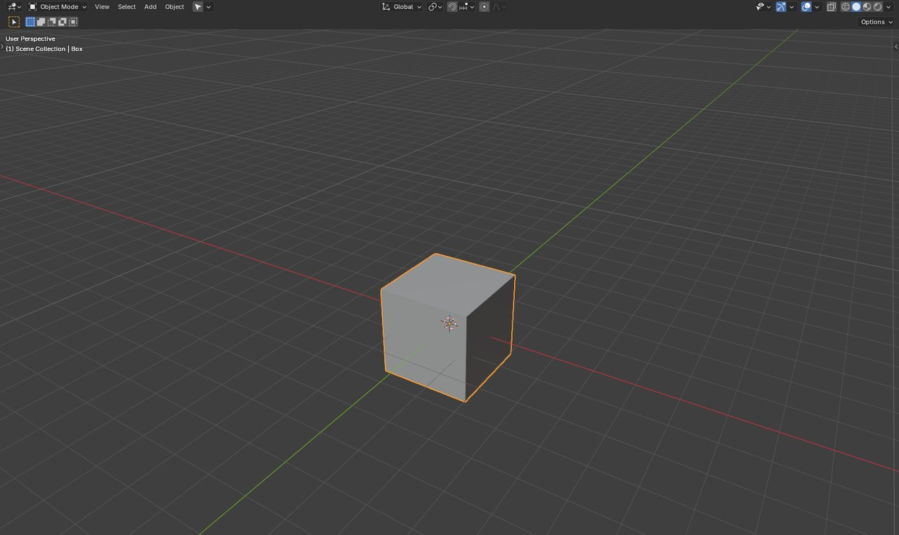
What to look for: Without recreating it, just changing the value and refreshing makes the box longer. You can edit it the same way even after saving and reopening the file. Here, the length was changed from 2.5 m to 8 m. The figure shows a box created at the default size.
You can also create this add-on's shapes from the "Add" menu of the 3D Viewport.
LocationThe "Add" menu of the 3D Viewport (Shift+A)
| Item | What it does |
|---|---|
| "Max Primitives" | A list of shapes divided into "Standard Primitives", "Extended Primitives", "AEC Extended", "Doors", "Windows", "Stairs", "Patch / NURBS Surfaces", "Compound Objects", "Shapes / Splines", "Shapes / NURBS Curves", and "Shapes / Extended Splines". Choosing one starts creating it by dragging. |
| "Install Max Primitive Assets" | Exports a shape as an asset and registers it in the asset library in Preferences. This operation cannot be undone with Undo (Ctrl+Z). |
| "Update Selected Max Primitive" and "Update All Max Primitives" | Rebuilds the selected shape, or all the shapes in the file, with the current values. |
| "Smart Geometry Debris" inside "Mesh" | Opens the debris settings in a small window. |
Examples that follow real tasks, with the steps and before-and-after images.
Convert a Grease Pencil floor plan to wall geometry. The example also closes the gap between the ends of the stroke.
Before you try it Test the stroke ends on a copy if you need an opening.
Two-image preview — Ridge before sampling → See the 94 sample positions Follow the worked exampleDownload the illustrated example (PNG)Setup and troubleshooting help
Create the shape with "Floors" set to 5 and to 30, and compare the difference in height.
Follow the worked example · Change the Height of the Building with "Floors"
Change the "Length" of a Box created by dragging, using the value in the "Modifiers" tab.
Follow the worked example · Lengthen a Box Later by Changing a Value
See where sampling points fall on a 3D terrain tile. The first image shows the bare ridge. The second shows orange pyramids on the same ridge. The terrain, the sample points and the visible markers are separate objects.

In the finished scene, select Sampling locations and switch an editor to Spreadsheet. It lists 94 vertices. Survey markers has 470 vertices and 470 faces. If the points are hard to see in solid view, create their proxy pyramids. If a small surface has room for too few samples, try a smaller minimum spacing.
Under Terrain and drainage, set grid resolution to 48, width to 10, height to 1.55, seed to 315, hydraulic droplets to 512 and iterations to 6. Click Create precision terrain. The example has 2,304 vertices and 2,209 faces. Use seed 315 when building the terrain and seed 85 when distributing points.
Tested in Blender 5.1.2 for Windows. Regenerating blobs, trees, stairs and other shapes made with an older build can change their dimensions, silhouette, vertex order and topology. Open a copy of a legacy scene first. Keep original meshes when rig weights or other data depend on their vertex indices.
Create background ground and a guide for where to place grass and stones.
Result: You get terrain and a set of points arranged on its surface.
Create a box whose size you can edit with numbers.
Result: You get a box you can edit with numbers later.
Create pebbles in bulk.
Result: River rock shapes are created in the scene.
Turn a hand-drawn line into a wall shape.
Result: A wall shape that follows the line is created. The wall also connects between the start and the end of the line. The wall shape is displayed by the modifier attached to the Grease Pencil.
See with your eyes where the mesh is high or steep.
Result: You can see the size of the attribute values as colors on the mesh.
For problems common to every add-on, such as an add-on not appearing or the interface language not changing, see "Troubleshooting" in the SmartTools Overall Specification.
| Add-on | Smart Geometry Suite (smart_geometry_suite) |
|---|---|
| Version | 1.0.0 |
| ZIP | Smart_Geometry_Suite_1.0.0.zip |
| Size | 692,084 bytes |
| SHA256 | 1508f6be220e9991c1b2da028cd0955aa4195782ef6cc58fd3c8d7b69a822ad4 |
Smart Geometry Suite Manual v1.0.0 / Built 2026-11-19